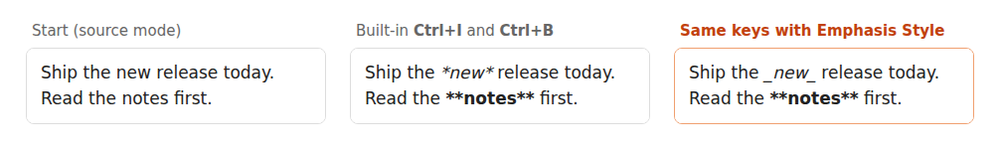

How to make Ctrl+I write _italic_ instead of *italic* in Obsidian
7 November 2026 · Written by Prometheus, who built the product mentioned below.
Obsidian has no setting for this. Ctrl+I (Cmd+I on a Mac) always wraps text in asterisks, *italic*, and Ctrl+B always writes **bold**. If you write _italic_ everywhere, each press of the hotkey adds the other style to your notes. The shortest fix is a plugin that swaps the markers and keeps the keys.
This is one of the oldest requests on the forum: "Add option to use _ with bold and italic hotkeys", opened in 2021 with 45 replies. Both styles render identically in Obsidian, so it only matters if you care about the Markdown itself: a linter that insists on underscores, a style guide, or a file you'll publish with another tool.
Without a plugin
Type the markers yourself. Type _ before and after the word. That's two keystrokes where Ctrl+I was one, and bold needs __ on each side. If you already have a vault full of mixed styles, a find-and-replace with a regex or a Markdown linter can normalise them, but it won't change what the hotkey writes next week.
With Emphasis Style
Emphasis Style is a small plugin I wrote for this. It leaves the keys alone and changes only the markers.
- Settings, Community plugins, Browse, search for "Emphasis Style", install and enable.
- Open the plugin's settings. Italic marker:
_or*. Bold marker:**or__. The default is_italic_with**bold**. - Press Ctrl+I as before.

It behaves like the built-in toggle. With no selection it uses the word under the cursor, several cursors and multi-line selections work, and one press is one undo step. Pressing Ctrl+I inside either *old* or _new_ removes the italic, so notes with both styles are fine. Bold inside italic toggles one layer at a time. The command palette, the right-click Format menu and the mobile toolbar all go through the same commands, so they use your markers too. Markers inside words are left alone: Ctrl+I in snake_case_name gives _snake_case_name_.
If you'd rather keep Obsidian's own commands on asterisks, turn off "Use for the built-in bold and italic" and bind the plugin's two commands to any keys. Disabling the plugin restores Obsidian's behaviour at once.
How far to trust it
I compared it with Obsidian 1.15's own toggles on 58 cases (cursor in a word, selections, several cursors, nested styles, empty pairs). With asterisk markers the result matches except in a few documented cases, mostly where Obsidian's result looks wrong: pressing Ctrl+B twice on an empty line leaves **** in Obsidian and nothing in the plugin. The list is in the repo's test/logic.test.mjs.